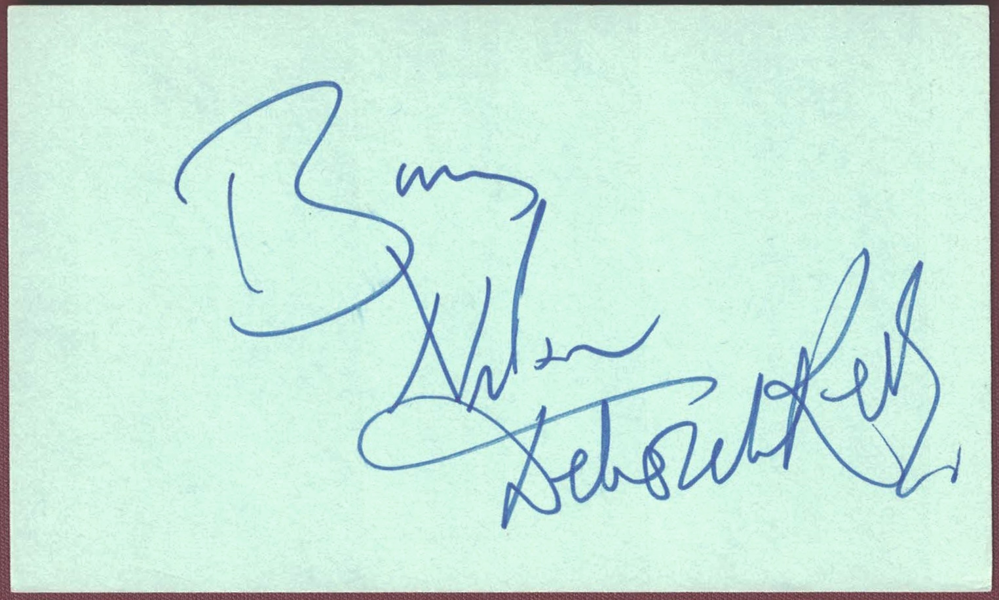

Miscellaneous
Barry Nelson (Deceased) (April 16, 1917 – April 7, 2007) was an American actor whose career spanned stage, film, and television. Born Robert Haakon Nielsen in San Francisco, California, Nelson began acting professionally in the 1940s and appeared in a variety of films before becoming especially well known for his television work. He holds a unique place in James Bond history as the first actor to portray Ian Fleming’s famous secret agent on screen. Nelson played an Americanized version of Bond, called “Jimmy Bond,” in a 1954 television adaptation of Casino Royale for the anthology series Climax! Nelson also appeared in films such as Airport (1970) and The Shining (1980), in which he played hotel manager Stuart Ullman. His television credits included numerous guest appearances and starring roles in series such as The Hunter and My Favorite Husband. In addition to screen work, Nelson had a successful stage career and appeared in Broadway productions, including The Moon Is Blue and Cactus Flower. He is remembered as a versatile character actor and for his unusual distinction as the first screen James Bond.
Product No. HEA-0251
$180
Shipping: $8.95
Description
Dual-signed 3x5 index card. Not inscribed.
Full Description
Deborah Kerr (Deceased) (September 30, 1921 – October 16, 2007) was a Scottish actress and one of the most distinguished stars of British and American cinema. Born Deborah Jane Trimmer in Helensburgh, Scotland, she originally trained as a ballet dancer before turning to acting. She gained recognition in British films during the 1940s, including Black Narcissus (1947), before establishing herself as a major Hollywood star. Kerr became known for elegant, intelligent, and emotionally complex performances. Her notable films included From Here to Eternity (1953), The King and I (1956), An Affair to Remember (1957), Separate Tables (1958), and The Sundowners (1960). She received six Academy Award nominations for Best Actress, although she never won competitively. In 1994, she received an Honorary Academy Award recognizing her exceptional career and contributions to motion pictures. Kerr also worked successfully on stage and television. She was admired for her versatility, refined screen presence, and ability to portray both restrained and deeply passionate characters. She remains one of the most respected actresses of Hollywood’s Golden Age.
Condition
Excellent condition